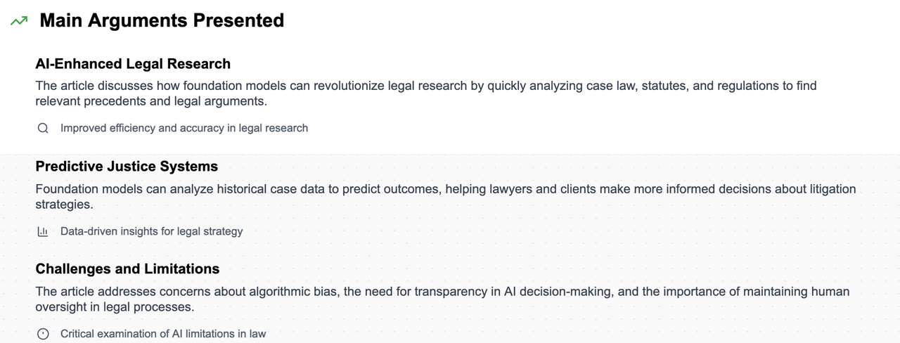
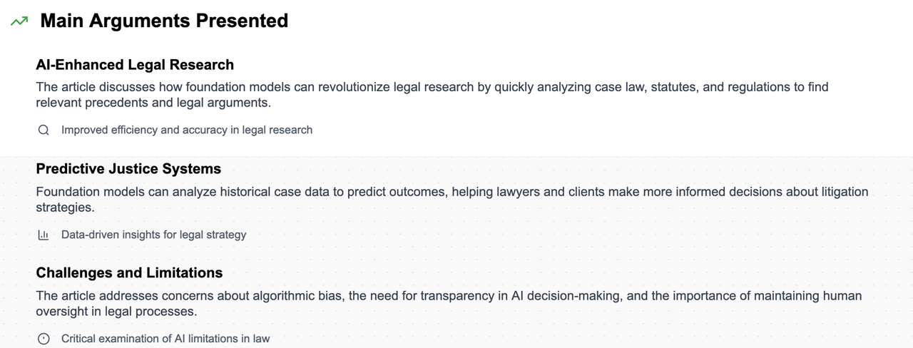

The reach of the law is immense, spanning from family disputes to global corporate transactions. Yet, despite its vast scope and a large number of legal professionals—over 1.3 million lawyers in the U.S. alone—"access to justice" remains a significant and pressing problem for many. Legal services are often prohibitively expensive, leaving a large portion of the population without adequate representation. This has led many to believe that technology may be a path forward, and foundation models, with their powerful capabilities, could play a transformative role.
In this section, we'll explore how these models could improve access to justice and government services, reduce the procedural and financial barriers that stand in people's way, and assist legal professionals in their daily work. However, we'll also take a critical look at the unique challenges that legal applications pose, such as the need for precision, explainability, and the ability to handle long, complex documents. While the potential is great, the ethical, legal, and fairness considerations are particularly important to examine before these models are deployed, as the consequences of their use can have real-world impacts on people's lives.
The State of Justice: A System Overworked and Underrepresented¶
"Ninety percent of our lawyers serve ten percent of our people. We are overlawyered and underrepresented," opined President Jimmy Carter in 1978. While the number of lawyers has grown since then, the core issue remains largely the same. Public defenders, for instance, are often overworked and underfunded, and many low-income individuals struggle to secure adequate legal representation. These systemic issues create a pressing need for innovation, and many believe that technology, including foundation models, could provide a viable path forward.
The Access to Justice Crisis: The Gap Between Need and Services¶
Have you ever considered that the cost of legal services might be a luxury most people simply can't afford? This isn't just an anecdotal observation; it's a stark reality known as the "access to justice" crisis. For example, a staggering 86% of low-income individuals in the U.S. with civil legal problems report receiving either inadequate or no legal help at all. This means that a vast majority of people are left to navigate a complex legal system on their own.
Even for those who do receive representation, such as through public defender offices, the system is often strained. In 2007, for instance, 73% of county-based public defender offices exceeded the maximum recommended limit of cases per attorney. This kind of systemic pressure can lead to overworked lawyers and potential procedural errors, further highlighting the gap between the need for legal services and the availability of quality representation.
Foundation Models: A New Hope for Legal Services?¶
So, in a system marked by high costs and resource constraints, what role can foundation models play? A major promise is that these models can help to level the playing field, improving access to justice and government services by reducing the procedural and financial barriers that keep so many people from getting the help they need. The legal world presents unique challenges to traditional computational solutions. Legal language is highly specialized, legal outcomes often depend on ambiguous standards, and, due to high costs, labeled training data is scarce.
This is where foundation models shine. Their flexibility and ability to learn from few examples make them uniquely positioned to address these challenges. They can be trained on vast amounts of legal text, audio, and video, and then quickly adapted to new, specific legal tasks with minimal labeled data. This adaptability could lead to more affordable and accessible legal services, potentially transforming the legal landscape for both professionals and the public.
Opportunities in Law: From Civil Suits to Public Policy¶
The applications of foundation models in the legal world are incredibly diverse, from assisting lawyers in their daily work to helping government agencies streamline their processes. While many of these topics may apply to different legal systems around the world, our focus will be primarily on the U.S. legal system due to the authors' expertise. We'll explore three broad categories: civil law, criminal law, and public law.
Private Law (Civil Justice): Aiding Attorneys and the Public¶
In the U.S. civil legal system, where disputes arise between private individuals over issues like contracts or property, the burden of finding and paying an attorney falls on the parties themselves. This often leaves many, particularly those with low incomes, struggling to secure adequate legal representation. Foundation models have the potential to improve access to justice by reducing the cost and improving the quality of these services.
Before Litigation: The First Steps of Legal AI¶
Even before an attorney is involved, clients can benefit from foundation models. Imagine a client with a legal problem who doesn’t know where to start. Recent work has shown that machine learning models can be used to identify the relevant legal issues from a client's simple, plain-language description of their situation. This type of tool could provide a recommendation for the type of legal action needed or even suggest a specialized attorney. A number of other efforts have also used machine learning to provide information tailored to a client's specific needs, helping them navigate the legal system on their own.
Once a client speaks with an attorney, foundation models can also assist in pre-litigation processes. An attorney can use these tools to evaluate contracts, review terms of service, and find relevant patents, giving their clients an advantage before a costly trial begins. The models can also help in translating legal documents and client interactions, a task that requires a high degree of precision and is difficult for traditional methods due to the technical nature of legal language and the existence of local dialects. Foundation models, with their ability to adapt quickly in these low-resource contexts, could improve performance in this area over fully supervised mechanisms.
During Litigation: The AI Legal Assistant¶
Once a civil case heads into litigation, the legal process becomes incredibly complex and time-consuming. From conducting legal research to drafting documents, there's a huge amount of work that could be made more efficient with the help of AI. Foundation models, with their ability to process and generate text, can act as a powerful assistant for lawyers during this phase.
For example, these models can be used for recommending relevant citations and holding statements when writing legal texts. They can also power legal search engines, helping lawyers conduct legal research more efficiently. Perhaps most compelling, foundation models could help lawyers generate legal briefs or find novel arguments. They could even provide recommendations on how to improve a brief to ensure a favorable outcome, based on an analysis of past legal proceedings.
Foundation models can also be a game-changer in the discovery process, where attorneys exchange documents and evidence. These documents are often multi-modal, containing video, images, audio, and text. Current systems for document review are costly because they rely on supervised learning. Foundation models, with their few-shot or zero-shot document retrieval capabilities, could drastically reduce the costs of this process, easing a significant financial burden for clients.
After the Verdict: Aiding Judges and Clerks¶
Even after a trial concludes, foundation models can continue to play a role. They can assist judges and law clerks in the crucial task of evaluating legal claims from both parties. By using contextual embeddings from foundation models, they might even be able to assist in the complex process of statutory interpretation. These models could help judges draft decisions by flagging obvious mistakes in their opinions or, as one study suggests, even help identify racial biases in legal opinions, assisting judges in revising them accordingly.
Criminal Law: From Risk Scores to Structural Oversight¶
Criminal law is a particularly contentious area for the use of AI, and rightly so. The use of risk scores in government settings, especially in making charging or parole decisions, requires extremely careful consideration. Foundation models, particularly those trained on language data, have the potential to introduce biases that could have serious real-world consequences.
Navigating the System: Tools for Prosecutors and Defenders¶
While the use of AI in making critical decisions like risk scores is rightfully debated, foundation models can still play a beneficial role in many other dimensions of criminal justice. The same tools that can assist lawyers in civil litigation can also be used by prosecutors and defense attorneys. For example, they can help appointed attorneys perform their jobs more efficiently, reducing unnecessary overhead and allowing them to manage their heavy caseloads more effectively. This is particularly important for public defenders, who are often overworked and underfunded. Foundation models could help by identifying procedural errors and automating simple tasks, thereby freeing up time for lawyers to focus on more complex, critical aspects of their cases.
Reducing Bias: A Mechanism for Oversight¶
Beyond simply helping lawyers with their workloads, foundation models can also serve as a powerful oversight mechanism to help reduce structural inequities in the criminal justice system. For example, pretrained models have been used to process parole hearing transcripts to find instances of anomalous outcomes. Other work has helped remove linguistic cues for a suspect's race in police reports to promote race-blind charging decisions and avoid racially biased prosecutions. In these contexts, labeling data is very costly and requires access to sensitive information. Foundation models can help reduce these costs by pretraining on large amounts of general data and then adapting quickly to these specific, low-label tasks.
Public Law: Streamlining Government Services¶
Government agencies regulate vast parts of society, and foundation models have wide potential applicability across public law. This includes everything from analyzing public comments on proposed regulations to assisting patent examiners and helping with mass adjudication. Many of these government applications face similar challenges to those in private law: resources are constrained, and contexts are constantly shifting. As such, the adaptability and flexibility of foundation models are often required to improve efficiency and performance.
An illustrative example is the use of NLP for facilitative moderation in public comment forums. A system could use predictive models to help citizens improve their arguments and identify misstatements in their comments, ensuring that public discourse is more productive. A system like this has already been deployed in the U.S. Department of Transportation rulemaking process, and its capabilities could likely be improved through the linguistic reasoning of foundation models. However, it's crucial to remember that government agencies must comply with constitutional, statutory, and administrative obligations, so additional care is needed in these settings.
The Unique Promise of Foundation Models in Law¶
So, given all these potential applications, what is it about foundation models that makes them uniquely suited to help in the legal domain? The challenges of legal work—high costs, limited data, and a need for contextual understanding across multiple scales—are perfectly aligned with the strengths of these new AI models.
Addressing Data Challenges: High Costs and Scarcity¶
The cost of annotating legal data is incredibly high. To create high-quality labels, you often need the expertise of an attorney, who may charge hundreds of dollars per hour. This makes collecting large, labeled datasets for training traditional models prohibitively expensive. Even when data is collected, it can be sensitive and cannot be easily pooled together to train a large language model. Given recent progress in few-shot learning, foundation models are among the most promising paths for learning models with limited annotations, a setting that is incredibly common in the legal field.
Bridging Contextual Gaps: From History to Individual Cases¶
Legal decision-making requires context at various scales. A lawyer or judge needs to understand not only the historical decisions and legal standards that apply to a case, but also the specific nuances of the individual case at hand. This is a formidable challenge for traditional computational models. Foundation models are uniquely poised to have the potential to learn shared representations of historical and legal contexts, as well as possess the linguistic power and precision required for modeling an individual case. This ability to handle context at multiple scales could be a game-changer for a wide variety of legal applications.
What's Missing? The Frontier of AI Legal Reasoning¶
While the opportunities for foundation models in law are exciting, we must also be realistic about their current limitations. To be a truly effective and reliable tool in a legal context, these models need to overcome several significant challenges. We can illustrate these deficiencies by imagining a future where a foundation model is tasked with automatically creating a legal brief.
The Long Context Problem: Legal Documents Are Not Short¶
To automatically create a legal brief, a foundation model must first be able to read and understand incredibly long documents and then produce equally long, coherent narratives. Legal documents tend to be far longer than documents in any other context. For instance, the average U.S. Supreme Court opinion contains around 4,700 words, and a brief to the Supreme Court can have as many as 15,000 words. Current foundation models have struggled with such long contexts and outputs, and this is a significant hurdle that needs to be overcome for them to be useful in a legal setting.
The Reasoning Challenge: Retrieval, Logic, and Argument Formation¶
But reading long documents is just the first step. To create a compelling legal brief, a foundation model must also be able to retrieve the relevant case law, understand which precedents are still valid, and then weave them into a persuasive argument. This is not a simple task of information retrieval; it requires a complex form of logical reasoning. The model must be able to identify a relevant legal rule and determine how it applies to a new situation. This is a crucial area where current models are still lacking, as we can see in a concrete example below.
A Concrete Example: The Flaws of GPT-3 in Legal Reasoning¶
Let's look at a concrete example to illustrate this reasoning deficiency, using a real exchange with GPT-3. The scenario involves a legal concept called "liquidated damages," which is a pre-determined monetary compensation for a breach of contract. A key legal rule is that these clauses are unenforceable if the amount is so high that it acts as a punishment, not just compensation.
When asked the abstract rule, GPT-3 correctly stated that liquidated damages clauses are generally enforceable unless the sum is "exorbitant or unconscionable." However, when a scenario was presented involving a $1 million damage clause for the late delivery of a Toyota Corolla, the model failed to apply the rule correctly. It concluded that the party was entitled to the full $1 million, failing to infer that this amount was exorbitant for the object in question. Even when explicitly told that the amount was "exorbitant," the model still failed to reason correctly, stating that the amount was not exorbitant "since the price was set by the parties themselves." This demonstrates that current models are unable to conduct the complex, logical reasoning required in a legal context.
The Precision Problem: Truthfulness and Specificity¶
In the legal world, precision isn't just a nicety; it's an absolute necessity. A foundation model in a legal context cannot afford to make up facts or be imprecise in its language. False statements can lead to severe sanctions against attorneys, and even slight inaccuracies can have drastic, unanticipated consequences for a client. Current models have a known problem of hallucinating facts, and this is a major issue that needs to be addressed before they can be reliably deployed in a legal setting where truthfulness and specificity are of paramount importance.
The Data Problem: Few-Shot Learning and Unrepresentative Corpora¶
Another major challenge for foundation models is the scarcity and potential unrepresentativeness of legal data. The cost of manual annotation is high, and while few-shot learning offers a promising path, it's still in its early stages of development. Additionally, a significant amount of legal data may be unrepresentative of typical disputes, as only a fraction of cases end up in legal opinions. This means that even if a model is trained on a large legal corpus, it may not be able to generalize to the types of cases it encounters in practice. This raises a concern that foundation models could concentrate power among the few actors who have the resources to train them on more representative, in-domain data.
The Reliability Imperative: Consequences of AI Failure¶
Finally, we come back to a point that's been woven throughout this discussion: reliability. Even if foundation models can theoretically perform all these tasks, their deployment in a legal setting remains a major challenge. A failure of a foundation model in the law can have real, damaging consequences for both clients and attorneys. For this reason, some courts have already deemed machine translation software to be unreliable for use as evidence, highlighting the high standard of reliability that is required in the legal field.
Conclusion: A Lode Star for Future Development¶
The prospect of a foundation model capable of legal briefing and reasoning is likely beyond the capabilities of current models. The challenges are significant, from handling long documents and logical reasoning to ensuring precision and reliability. However, these very challenges also serve as a "lode star" – a guiding light – for the ongoing development of foundation models. By focusing on these difficult problems, we can push the boundaries of what these models are capable of and move closer to a future where AI can genuinely improve access to justice and streamline the legal process.
The legal field is a perfect test bed for pushing the limits of foundation models. It requires a blend of vast knowledge, logical reasoning, and a high degree of precision that is currently unmatched by any AI system. But with continued research and a careful, ethical approach to development, the dream of a more just and accessible legal system, aided by the power of AI, may one day become a reality.
Frequently Asked Questions (FAQs)¶
Q1: What is the "access to justice" crisis in the U.S.? A1: The "access to justice" crisis refers to the significant gap between the need for legal services and the ability of many individuals, particularly those with low incomes, to afford or obtain them. This results in a large portion of the population having inadequate or no legal representation, leaving them unable to navigate the complex legal system effectively.
Q2: How can foundation models help public defenders? A2: Public defenders are often overworked and underfunded, and foundation models can help them manage their heavy caseloads more effectively. These models can automate simple tasks, identify potential procedural errors, and assist with legal research and document drafting, thereby freeing up the public defenders' time to focus on more complex and critical aspects of their cases.
Q3: What makes legal reasoning so difficult for foundation models? A3: Legal reasoning is difficult for foundation models because it requires a combination of skills they currently lack. This includes the ability to process extremely long documents, retrieve and evaluate relevant legal precedents, and apply abstract legal rules to new and unseen fact patterns with a high degree of logical precision. It's a complex, multi-step process that goes beyond simple pattern recognition.
Q4: Why is few-shot learning important for foundation models in law? A4: Few-shot learning is crucial in law because the cost of obtaining high-quality, human-annotated legal data is very high. Foundation models that can learn effectively from a small number of examples can be quickly adapted to new legal tasks without the need for large, expensive, and sensitive datasets. This makes them a more practical solution for many legal applications.
Q5: What are the biggest ethical and legal challenges for using AI in law? A5: The biggest challenges include ensuring patient safety, privacy, fairness, and accountability. It's critical to ensure that AI models do not perpetuate or exacerbate existing biases in the legal system, particularly regarding race and socioeconomic status. The models must also be reliable and able to provide explainable reasoning for their decisions, as the consequences of a failure can have severe real-world impacts on people's lives.
Citation: Bommasani, R., Hudson, D. A., Adeli, E., Altman, R., Arora, S., von Arx, S., ... & Liang, P. (2022). On the opportunities and risks of foundation models. arXiv preprint arXiv:2108.07258. Available at: https://arxiv.org/abs/2108.07258